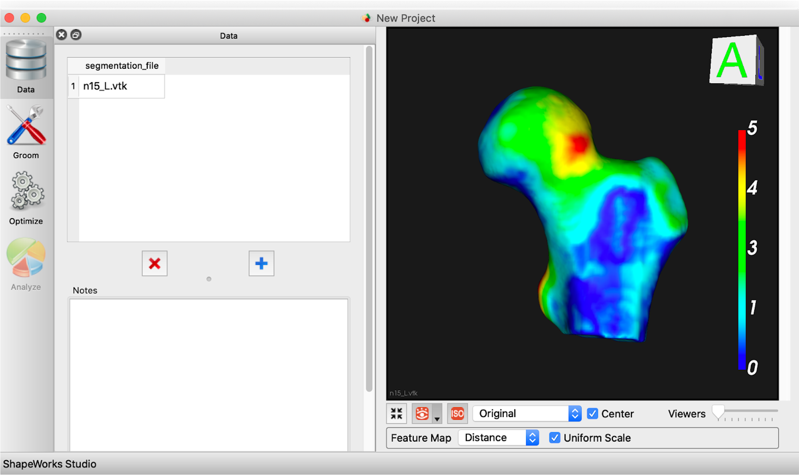

New in ShapeWorks Studio
Multiple Domains
As of ShapeWorks 6.1, we added support in ShapeWorks Studio for modeling multiple domains (e.g. anatomies) in joint correspondance model.

See Multiple Domains for more information.
Mesh Grooming
As of ShapeWorks 6.1, we added support in ShapeWorks Studio for mesh grooming, including smoothing, hole filling, and iterative closest point pre-alignment.

See Groom Module for more information.
Mesh Support
As of ShapeWorks 6.0, we added mesh support to ShapeWorks Studio including loading meshes, optimizing shape models directly on meshes, and visualizing meshes with scalar feature values. Meshes can store values at vertices such as "cortical thickness", or "fibrosis” and ShapeWorks Studio uses them in a similar manner as feature maps/volumes.
Open meshes in Studio

Visualizing features on surface mesh 
We also added a new surface reconstruction method with support for both mesh or image inputs. This method is much faster and is the new default.
New and faster surface reconstruction

Improved Studio Interface
As of ShapeWorks 6.0, we added support for automatic glyph sizing, draging/dropping of images and meshes. Scalar bar color is now opposite of background color (e.g., when background is white, text should be dark) (user request).
Samples names color is opposite of the background color for a better contrast

Surface Reconstruction
ShapeWorks Studio provides a particle-based surface reconstruction that can reconstruct high quality surface meshes with fewer number of particles. See How to Analyze Your Shape Model? for details about the method.
With particle-based surface reconstruction, there is not need to optimize denser particle systems (i.e., with more particles) to reconstruct surface meshes with subvoxel accuracy

(old) VTK-based surface reconstruction
(new) particle-based surface reconstruction
Dynamic Loading
ShapeWorks Studio support load-on-demand, which makes it more scalable by supporting loading in order of 100s of samples. For instance, an old small project that took 10+ seconds to load now starts instantly in Studio.
(old) without dynamic loading
(new) with dynamic loading
Live Particles Movement
ShapeWorks Studio allows for live introspection of the correpsondence placement optimization process and the ability to abort the optimization at any time (e.g., changing algorithmic parameters).
Feature Maps
ShapeWorks Studio has the ability to integrate feature maps. A feature map is a 3d image volume that contains scalar values to be associated with each shape’s surface. For example, this could be raw or processed CT/MRI data. The feature map can be displayed for each surface by choosing the desired feature map in the feature map combobox at the bottom of the screen. After the correspondence is generated, the average feature map can be displayed on the mean shape in the analysis tab.